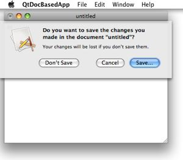
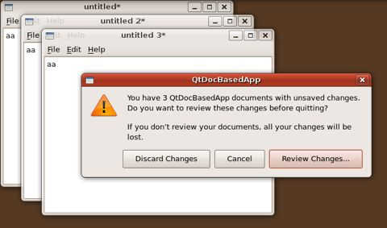
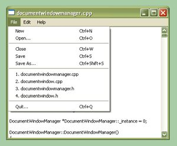
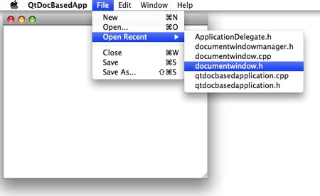

I discuss Nokia’s recent release of the Qt GUI framework under the LGPL. I also show how Qt can be used to write an application that behaves very Mac-like in the form of a skeleton of a document-based application.
I’ve been reviewing different programming languages, libraries, and tools that I can use to implement my “next big project”, which will be an extension of my T2G program. A “T2G2” I suppose. T2G was written in OCaml and Objective C. The former was used to implement the jazz harmonic analysis and automatic accompaniment algorithms because of it’s expressiveness and the efficiency of code written in it. The latter was used for the GUI because T2G is a Mac application.
I’ve come to an interesting decision on the implementation language for the music algorithms, which I will perhaps discuss in a future article. I’ve also decided on what to use for the implementation of the GUI. As you’ve probably guessed from the title of this article, it’s going to be Qt.
Qt is interesting for many reasons. Not the least of which is the history of its licenses. For those unfamiliar with the story back around 2000, an example of FSF bullying at its best (worst?), start by reading one of its authors’ statement after adding GPL as a licensing option and Richard Stallman’s attack on Qt licensing. Much more recently, Nokia acquired Qt Software last year and released Qt under the LGPL this March (along with other licensing options).
This is super news! But not for reasons people have written about. LGPL licensing will have little effect on free software and the Linux desktop (and certainly less on the demise of GNOME and Gtk+) because Qt has been available under the GPL since 2000. And no, Adobe and others aren’t going to port their multimillion-line programs to Qt any time soon. A commercial version of Qt has been available if they have wanted to. The biggest beneficiaries are developers of new commercial products and developers who want their new projects to be unencumbered by the GPL, using a more or less restrictive license.
For reasons I won’t repeat here, I will not write GPL code ever again (see some of my objections, for example). My experiment with releasing code into the public domain also met with a great deal of unwarranted hostility. My current solution is to release code under a non-commercial, no redistribution license, which serves me just fine because my code’s chief purpose is educational and for illustration of research results. At the same time I also keep the door open for later commercialization. For this I can only use LGPL or less restrictively licensed libraries. That’s why the recent LGPL-ing of Qt is good news for me.
Qt also has many technical advantages over other GUI libraries. I’d much rather implement a GUI in C++ (Qt) than Objective C (Cocoa), and certainly much more than C (Gtk+, Carbon). Of course a cross-platform library such as Qt will allow my programs to run on Windows and Linux as well as Macs—a huge advantage. Of all the cross-platform libraries, Qt seems the most mature and closest in providing a GUI that conforms to Apple’s HIG. Those parts that don’t conform can be persuaded to do so as demonstrated by the sample project below. The latest version of Qt will also run on Cocoa (as an alternative to Carbon, which it already supports) so it can be used for 64-bit applications.
To start writing Qt programs simply download and install the SDK for your platform. On Linux you may need additional libraries depending on which packages you already have. To learn Qt, read the book C++ GUI Programming with Qt 4. An earlier edition of this book is available online. I’ve found that to be sufficient. Also read through whichever articles you need on the Qt Reference Documentation page. You may also find questions you have already answered in the Qt Interest mailing list archive. And of course look at the sample programs in the Demos and Examples directories.
One disadvantage of Qt is that information on its use on the Mac (especially under Cocoa) is still quite scarce. Another is although GUI elements are native on the Mac, one must do a little extra work to make the GUI behave more Mac-like.
My sample project QtDocBasedApp reproduces much of the behavior of a Cocoa document-based application created in Xcode using a standard project template. It provides Open, Save, Save As sheet file dialogs and Quit and Close confirmation dialogs when there are modified documents. Logout, restart, and shutdown are handled correctly. The application may be terminated by choosing Quit in the dock menu. Files can be dropped onto the application icon in the Finder or the dock. It provides a “recent files” menu and a “window” menu. It cascades new windows when they’re created. It can also be built and provides reasonable interaction under Linux and Windows.
This project also demonstrates a number of techniques for implementing Qt programs on the Mac and in general. It shows how Cocoa and/or Carbon code can provide functionalities omitted by Qt, and how such code can coexist and selected by CONFIG variable in the project file (.pro file). It also demonstrates the use of an external library (in this case qtsingleapplication) and how to specify its location in the project file for the different platforms. See the file README.txt for more information about this project.
Here’s a screenshot of the save confirmation sheet on a Mac.
Here’s a screenshot of the quit confirmation dialog on Linux.
Here’s a screenshot of the recent files menu on Windows.
Here’s a screenshot of the Open Recent menu on the Mac.
All these from the same code base! Mac goodness from code written in Qt.
Category: Programming